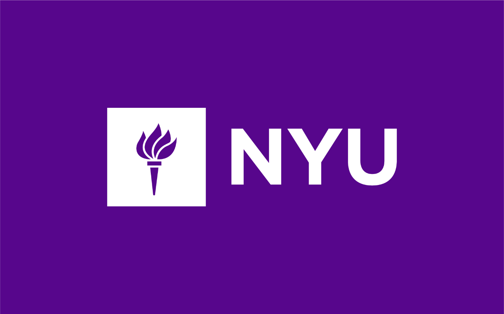

May 8, 2026 • NYU Tandon
NYC Student Theory & ML Day is a one-day gathering of NYC-area students in theoretical computer science, machine learning, and related areas. The event features student talks, discussion time, and opportunities to connect across institutions.
Attendance is free, but registration is required.
Lunch will be provided.
The event will be held at NYU Tandon School of Engineering, 370 Jay Street, Floor 08, Room 825, Brooklyn, NY.
Friday, May 8, 2026
Below is a tentative template with generous time per speaker. Speakers and titles will be added once confirmed.
| Time | Event |
|---|---|
| 11:00 am – 11:15 am | Opening Remarks |
| 11:15 am – 11:45 am | Talk 1: TBA – TBA |
| 11:45 am – 12:15 pm | Talk 2: TBA – TBA |
| 12:15 pm – 12:45 pm | Talk 3: TBA – TBA |
| 12:45 pm – 2:00 pm | Lunch Break |
| 2:00 pm – 2:30 pm | Talk 4: TBA – TBA |
| 2:30 pm – 3:00 pm | Talk 5: TBA – TBA |
| 3:00 pm – 3:30 pm | Talk 6: TBA – TBA |
| 3:30 pm – 3:50 pm | Break |
| 3:50 pm – 4:20 pm | Talk 7: TBA – TBA |
| 4:20 pm – 4:50 pm | Talk 8: TBA – TBA |
| 4:50 pm – 5:00 pm | Wrap-up |
| After 5:00 pm | Networking Session (optional) |
For additional details or inquiries, please email: Akbar Rafiey <ar9530@nyu.edu> or Nairen Cao <nc1827@nyu.edu>.